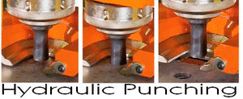
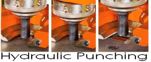
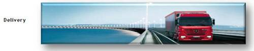
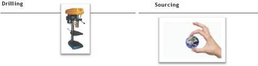

Service List
At Econo-Steel we are a dynamic company that provides solutions to our valued clients.
We can assit with processing that is designed provide time and cost saving alternatives to our customers. Pre-cut plates are one the many custom products/ services we offer.

We can deliver material by way of our trucks. Country areas can be arranged.

We are happy to quote your requirements aiming to offer a practical service.
We have a large network of suppliers, both here and overseas. Our product range is increasing to include products beyond our normal range. You are welcome to try us. Custom made steel plates to meet your needs. Base plates, road plates and angle bracket connectors. Custom made steel plates are available in a variety of shapes and sizes. They include base plates, road plates, angle bracket connectors, channel rail connectors and channel plates. Building a new steel shed could be easier with our steel base and road plates. We offer a variety of custom made steel plates that are designed to fit your needs. Steel plates are available in all shapes, sizes and thickness.

To contact us: Phone: +61 (03) 9587 2100 Email: info@econosteel.com
9-13 LAMANA ROAD, MORDIALLOC, MELBOURNE, VIC, 3195 AUSTRALIA View Larger Map